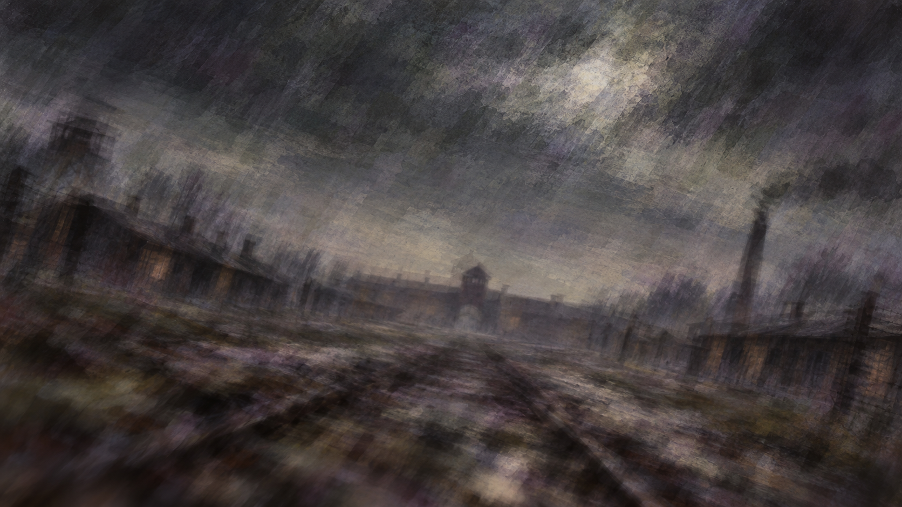
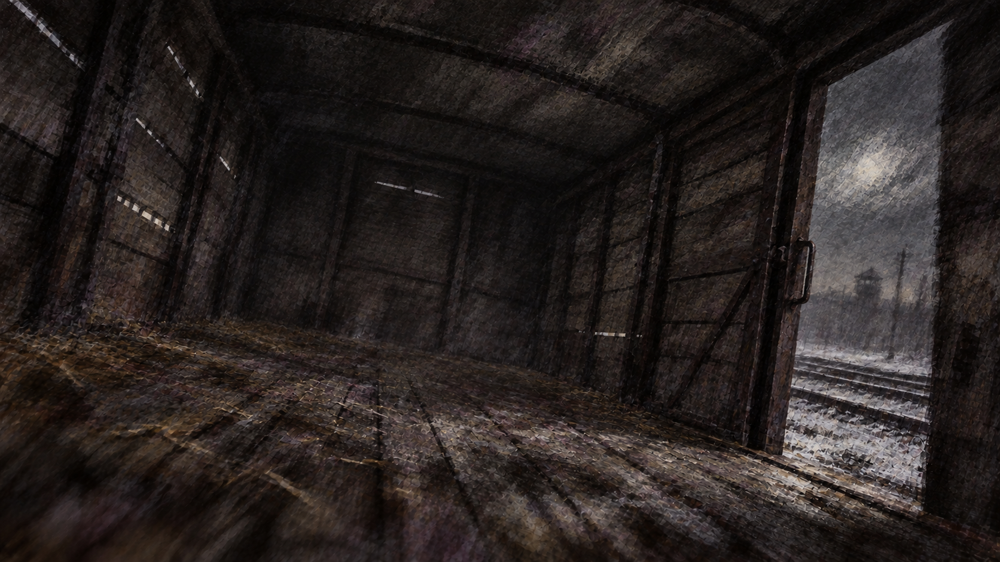

一份尚未合上的记录
追寻生命的意义
在结局到来之前
留待明日
从押运车开始
继续
按章节开始
成就
暂停背景动态
以维克多·弗兰克尔的经历为原型
对白、配角与分支经过文学改编 · 死亡路线属于假设分支
← 返回开始
留待明日
成就 →
走过的路
未到达
已到达
意义
−
100%
＋
适应宽度
← 返回开始
留待明日
流程图 →
留下的意义
一些时刻，在走过之后才有了名字。
这些记录没有分数，也不衡量一个人是否值得生还。

留待明日
开场白已跳过，点击此处回顾
点击，继续 ↵
维克多·弗兰克尔
↵
›
此刻，我决定
按 1 / 2，或点击选择
从上一个选择开始
再读一遍
合上 · 回到开始界面
← 上一页
下一页 →
取消
返回
返回 ↵
◇
已留下新的意义